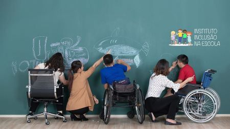
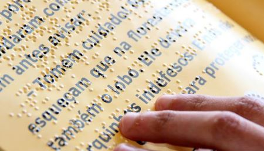
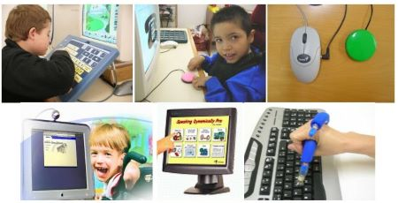
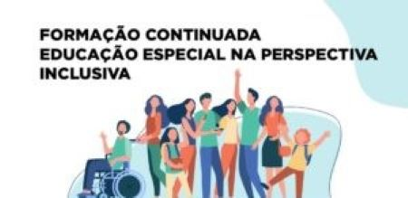

Acessibilidade na Educação: Construindo um Futuro Inclusivo
A educação é a base fundamental para o desenvolvimento humano, e a acessibilidade desempenha um papel crucial para garantir que essa base seja construída de maneira inclusiva. Em um mundo diverso, onde cada indivíduo possui habilidades únicas, é imperativo que o sistema educacional esteja acessível a todos, independentemente de suas diferenças.
Possíveis Soluções

Descrição de Imagem: Escola Inclusiva e Acessível para Pessoas com Deficiência.
Descrição de Imagem: Escola Inclusiva e Acessível para Pessoas com Deficiência.

Descrição de Imagem: Livro em Braille.
Descrição de Imagem: Livro em Braille.

Descrição de Imagem: Tecnologias Adaptadas para Pessoas com Deficiência.
Descrição de Imagem: Tecnologias Adaptadas para Pessoas com Deficiência.

Descrição de Imagem: Capacitação de Professores para Educação Especial.
Descrição de Imagem: Capacitação de Professores para Educação Especial.